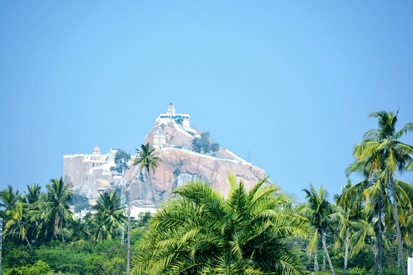
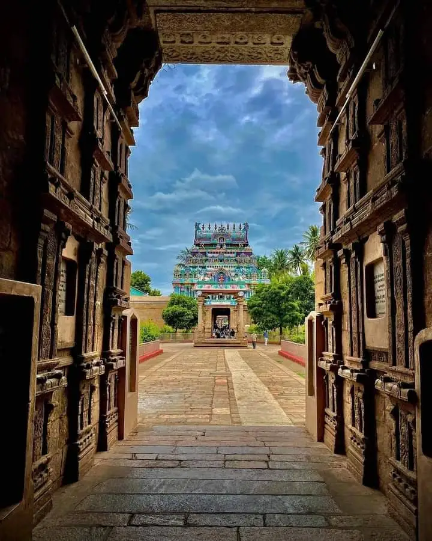
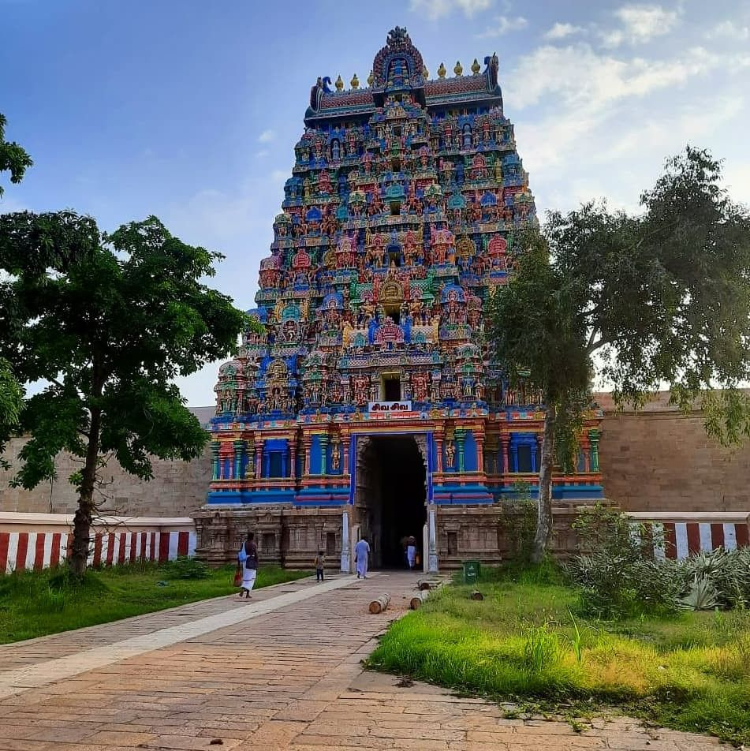
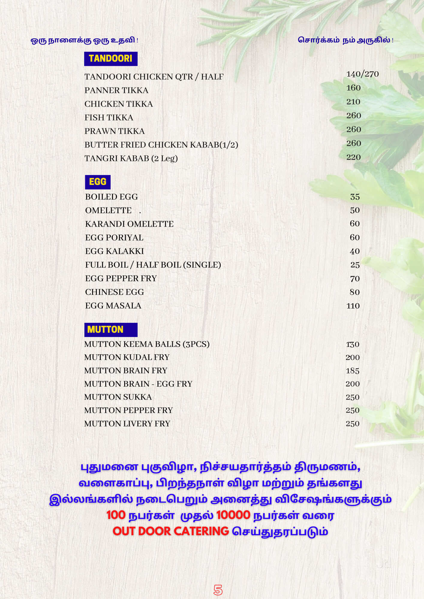

Welcome to Tiruchirappalli
Exploring our city's history and local food. Built for MAD Assignment (NIT Trichy).

📍 Map Marker: Trichy City Center (10.817° N, 78.697° E)
Heritage Sites
Rockfort Temple
Ancient rock-cut temple. 400+ steps to the top.
📍 Map Marker: 10.828° N, 78.684° ESrirangam Temple

Largest functioning Hindu temple in the world.
📍 Map Marker: 10.860° N, 78.688° EJambukeswarar

Famous for the water lingam and architecture.
📍 Map Marker: 10.850° N, 78.705° ELocal Food Spots
Iruttu Kadai
Famous Halwa shop near Rockfort. Try the original taste.
📍 Map Marker: 10.818° N, 78.685° EBanana Leaf Meals

Available near Thillai Nagar and Srirangam.
📍 Map Marker: 10.805° N, 78.695° EStreet Food
Murukku and local snacks near Central Bus Stand.
📍 Map Marker: 10.795° N, 78.702° E